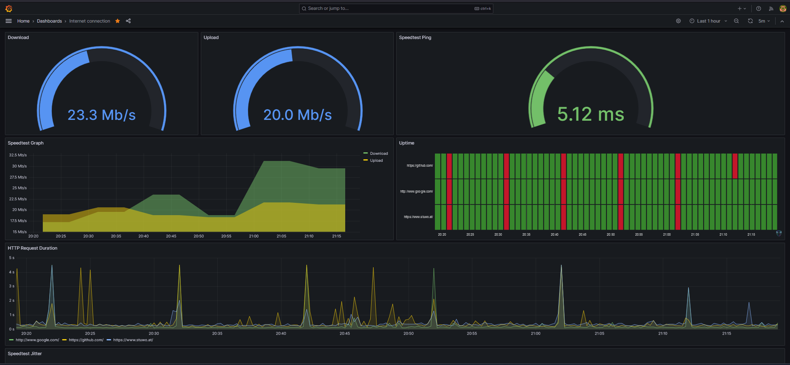

Raspberry Pi Internet speed monitor
Grafana Speed Monitor: Setting Up an Internet Monitor with Raspberry Pi
Introduction
Upon moving to a new place, I encountered widespread Wi-Fi complaints, leading technicians to attribute occasional outages to excessive gaming. Skeptical of this explanation, I decided to set up my own Internet monitor using a Raspberry Pi. In this guide, I'll walk you through creating your own monitor to assess and validate your internet speed, potentially debunking misleading claims from your Internet Service Provider (ISP).
Prerequisites
Before diving into the setup, ensure you have the following:
- Raspberry Pi or Linux device
- SSH access or direct access with monitor and keyboard
- Stable power supply for continuous operation
Setup
1. Update and Install Dependencies
Ensure your system is up to date:
sudo apt update && sudo apt upgrade -y
Install necessary packages:
sudo apt-get install -y python3-pip git python3-venv build-tools build-essentials
2. Clone Repository
Clone the internet-pi repository from geerlingguy on GitHub:
git clone https://github.com/geerlingguy/internet-pi.git && cd internet-pi
3. Install Required Tools
Install pipx for managing the Python virtual environment:
python3 -m pip install --user pipx
python3 -m pipx ensurepath
# Logout and log back in for changes to take effect
pipx install --include-deps ansible
4. Configure Ansible
Install Ansible Galaxy requirements:
ansible-galaxy install -r requirements.yml
Install Python requirements:
pip install PyYAML cython
5. Copy Configuration Files
Make copies of the example configuration files and customize them:
cp example.config.yml config.yml
cp example.inventory.ini inventory.ini
6. Modify Configuration
Edit the config.yml file to tailor the monitoring settings to your needs.
nano config.yml
Example Config:
...
# Internet monitoring configuration.
monitoring_enable: true
monitoring_grafana_admin_password: "SuperSecretPassword"
monitoring_speedtest_interval: 10m
monitoring_ping_interval: 5s
monitoring_ping_hosts: # [URL];[HUMAN_READABLE_NAME]
- http://www.google.com/;google.com
- https://github.com/;github.com
...
Tip: Exit with CRTL+X, then press Y to confirm and Enter.
7. Modify Inventory
Edit the inventory.ini file if running the monitor on the Raspberry Pi:
nano inventory.ini
Example Inventory:
[internet_pi]
#10.0.100.52 ansible_user=pi
# Comment out the previous line and uncomment this to run inside Raspberry Pi.
127.0.0.1 ansible_connection=local ansible_user=pi
8. Run the Playbook
Execute the playbook:
ansible-playbook main.yml
If issues arise, check Docker settings with:
nano tasks/docker.yml
Conclusion
Connecting to Grafana
Access the monitor by entering your Raspberry Pi's IP and port 3030 in a web browser, e.g., http://10.0.128.45:3030.
Login Credentials
Login with:
- Username: admin
- Password: the one set in the
config.yamlfile during step 8
Exporting Data
Export historical data by clicking on the three dots in the upper right corner of any widget, selecting Inspect and Data, and choosing export options such as CSV.
Final Thoughts
This monitor served as crucial evidence in addressing internet issues, providing real-time data reflecting the user experience. The Raspberry Pi mimics a typical user, capturing the nuances of the internet connection. Visualizing the data through Grafana is not only informative but also fascinating. Check out my dashboard after just a few days: 
Credits
This guide draws heavy inspiration from Jeff Geerling and his comprehensive guide: https://www.jeffgeerling.com/blog/2021/monitor-your-internet-raspberry-pi